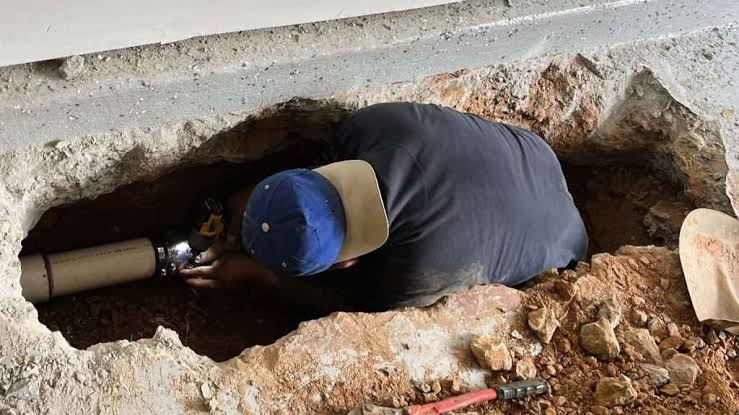
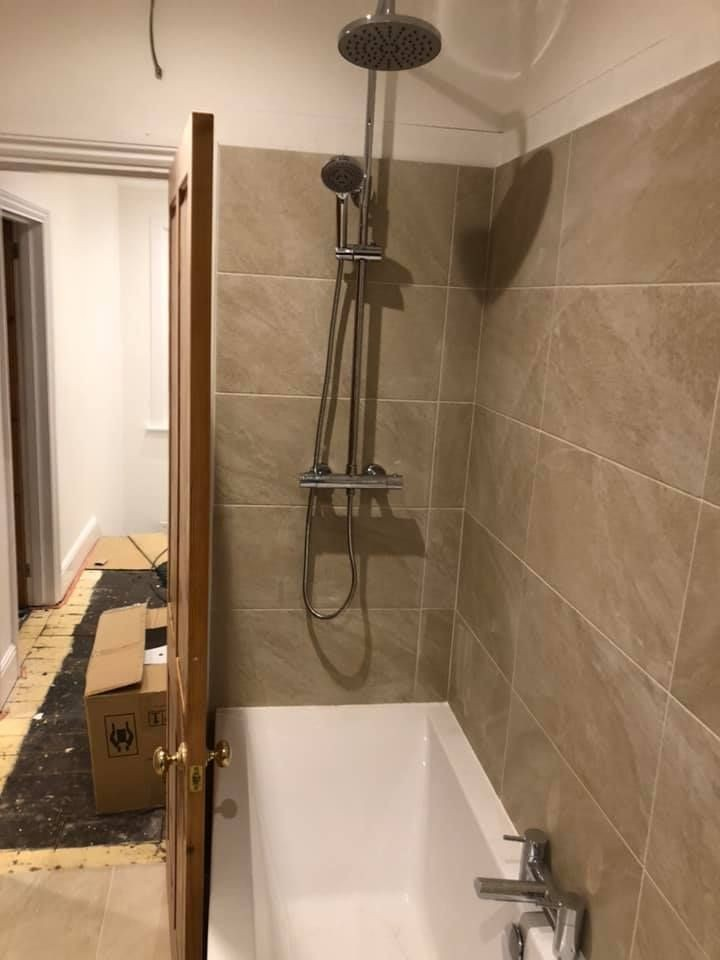
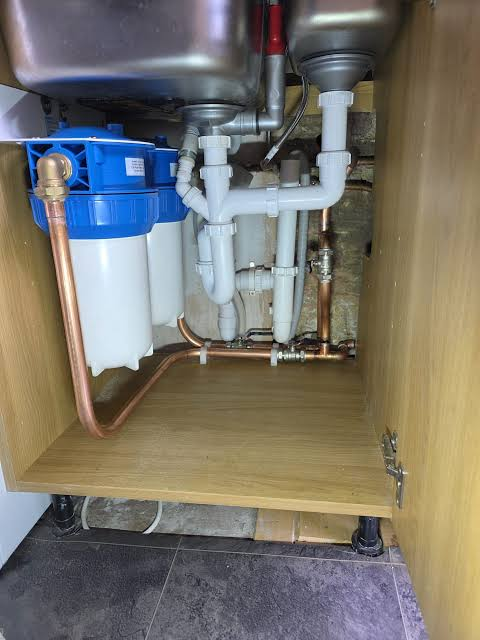
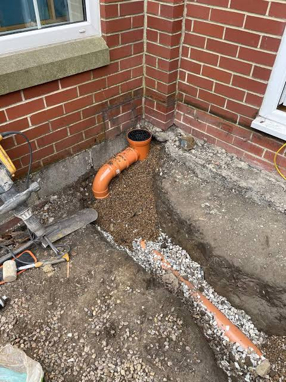
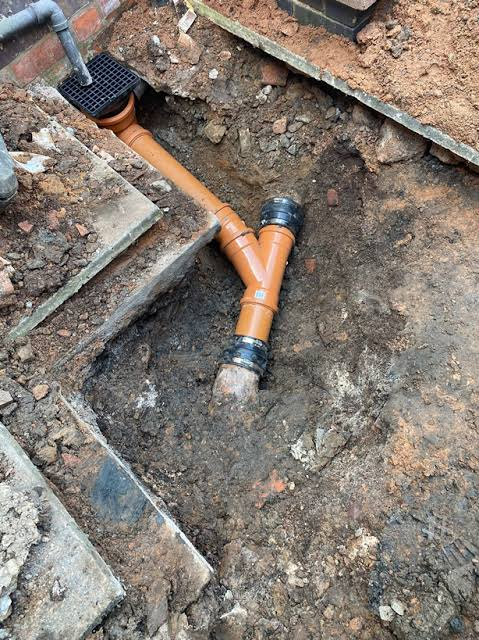
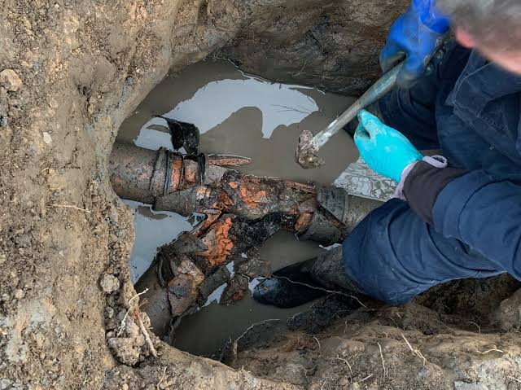

SLOUGH & SURROUNDING AREAS
Plumbing problems.
Let’s sort them.
From a leaking pipe to a new bathroom, talk to EasyPlumbing & Drainage about the work you need.
Repairs · Installations · Replacements

WHAT WE DO
Small repairs.
Fresh starts.
Tell us what’s happening. We’ll discuss the work and the next steps with you.
SOMETHING NEEDS ATTENTION?
Start with a conversation.
Describe the issue and share your postcode when you call.

FROM THE PIPEWORK TO THE FINISH.EASYPLUMBING & DRAINAGE LTD
A local starting point.
A practical approach.
Based in Slough, we offer plumbing repairs, installations and replacements across the listed service areas.
Whether you’re planning bathroom work or dealing with a leak, get in touch to discuss what you need.
- 01
Tell us what you need
Call or email with the issue and your location.
- 02
Discuss the work
Ask about the options, cost and a suitable appointment.
- 03
Agree the next step
Confirm the scope before work goes ahead.
A CLOSER LOOK
Behind the fittings.
Pipe access, plumbing connections and drainage repairs.




WHERE WE WORK
Slough, and
further afield.
Call with your postcode to confirm coverage and arrange a visit.
Check your area: 07520 655636LET’S TALK PLUMBING
What can we help with?
Tell us about the job, your location and how best to reach you.
07520 655636info@easy-plumbing.co.uk